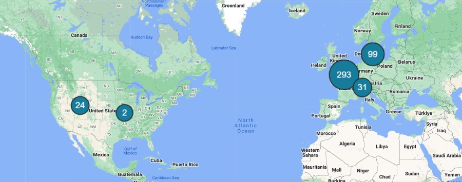
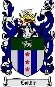

The Condie Name

Most of my family is from the United Kingdom, Denmark, Switzerland, and Sweeden. This is a picture that shows how many ancestors are from what locations.
My family has been involved in the formation of many areas. From the trek from England to the states of Utah and Idaho, and eventually the USA. One such individual is of particular significance and is my 3rd-great-grandfather who is from. His name is John Jones Williams. On my trek I walked in his name, and I learned many things about him before and after. His story has special significance to me because of this. Before he came to the US he worked by shoeing horses, where he worked directly for the king. He became a member of the Church of Jesus Christ, and traveled to Utah. His expertise with metalworking was useful for repairs and other such needs as he traveled across the plains to Utah. He eventually was able to move to Malad, Idaho (a place he had visited before) and helped to survey and build up the town. He was respected as the best blacksmith around, and if he couldn’t do it, then nobody would bother to try. He is “credited for making the first steel plow used in the Salt Lake Valley” All in all, John Jones Williams’ work ethic, kindness and caring for others allowed him to be able to make a huge difference in the lives of those around him.

This is an image of my family's crest. Most of my family is from the United Kingdom, which is mainly where family crests are important or originated from.
The name "Condie" is derived from conduit, most likely meaning that Condie was someone who lived near a water channel. According to familysearch.org there are over 1,500 Condie's still in Scotland, and over 600 Condie's in the US. Spencer Joel Condie (emeritus general authority since 2010) Thomas Spencer Monson (President of the Church 2008-2018)